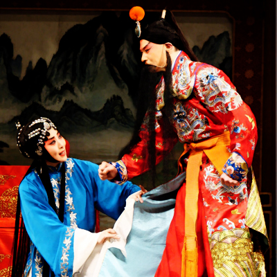

Opera- Si Lang Tan Mu |
|
|
Northern Song Dynasty, Yang was against the north southward invasion of the ethnic minorities, family men and women into battle together, Romance out a touching hero of a story, so far in the folklore. Here the fourth son of Yang Yanhui Yang said a single story. Yanhui Yang Silang in the Song, Liao and Jin a holy beach, was taken away Liao, renamed the wood easily, and iron mirror marry the princess. Fifteen years later, Shiro heard Lang in command, mother She Taijun also charge the same to forage with the business, moved their loved ones feel the love. But the war situation tense, no account pass, see the mother, is very gloomy. Princess Ming hidden secrets, theft of authority arrow, Shiro mixed by night pass, behold, Yang Zongbao Tour Camp Chaye, the Shiro as spies Zhuohui. Rokuro see that Mahone, personally relaxed, went to see his mother and other family members, all sad but also happy, cry. Just great side, and not the mother away. A "four-winding", also known as "North Heavenly Gate." Play is life, once the traditional opera singing one of high achievement. "Sit Palace" is one of the fold. |
 |